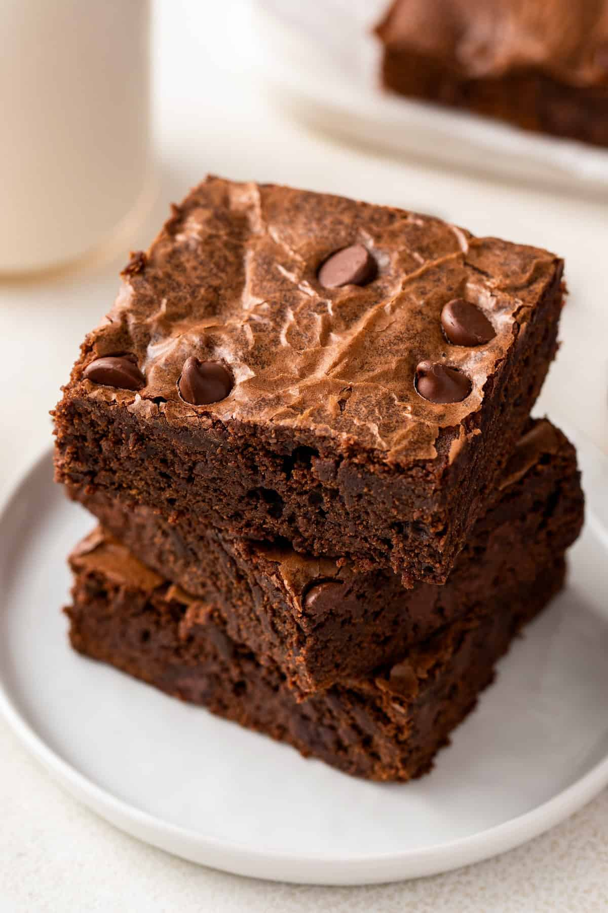
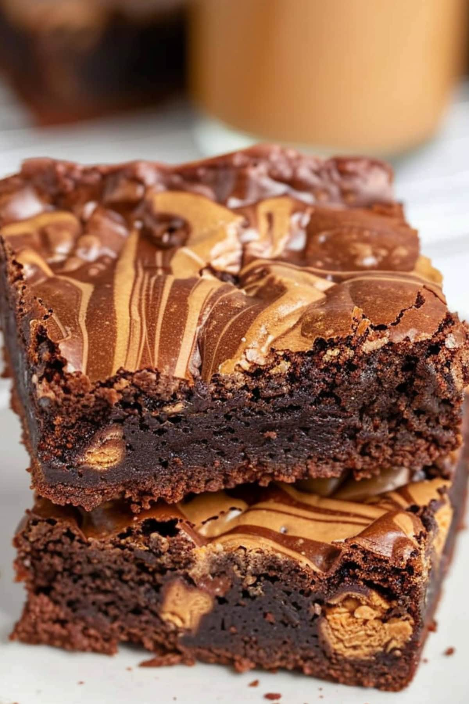

Classic Brownie Recipe

Ingredients
- 1 cup unsalted butter
- 2 cups granulated sugar
- 4 large eggs
- 1 teaspoon vanilla extract
- 1 cup all-purpose flour
- 1/2 cup cocoa powder
- 1/4 teaspoon baking powder
- 1/4 teaspoon salt
- 2 cups semisweet chocolate chips
Steps
- Preheat oven to 350°F (177°C) and grease a 9x13-inch baking pan.
- In a medium saucepan, melt butter over medium heat.
- Remove from heat and stir in sugar until smooth.
- Beat in eggs, one at a time, mixing well after each.
- Stir in vanilla extract.
- In a separate bowl, whisk together flour, cocoa powder, baking powder, and salt.
- Gradually add dry ingredients to the butter and sugar mixture, stirring until just combined.
- Fold in chocolate chips.
- Pour batter into prepared pan and spread evenly.
- Bake for 25-30 minutes, or until a toothpick inserted in the center comes out with a few moist crumbs.
- Allow to cool in the pan before slicing, enjoy!
Peanut Butter Brownie Recipe

Ingredients
- 1 cup unsalted butter
- 2 cups granulated sugar
- 1 cup brown sugar
- 1 cup smooth peanut butter
- 4 large eggs
- 2 teaspoons vanilla extract
- 2 cups all-purpose flour
- 1/2 cup cocoa powder
- 1 teaspoon baking powder
- 1/2 teaspoon salt
- 2 cups semisweet chocolate chips
Steps
- Preheat the oven to 350°F (175°C) and grease a 9x13 inch baking dish.
- In a large bowl, cream together the butter, granulated sugar, and brown sugar until smooth.
- Mix in the peanut butter until well combined.
- Beat in the eggs, one at a time, then stir in the vanilla extract.
- In another bowl, whisk together the flour, cocoa powder, baking powder, and salt.
- Gradually add the dry ingredients to the peanut butter mixture, mixing until just combined.
- Fold in the chocolate chips.
- Spread the batter evenly into the prepared baking dish.
- Bake for 30-35 minutes or until a toothpick inserted into the center comes out with a few crumbs.
- Allow to cool in the pan before cutting into squares and serving, enjoy!